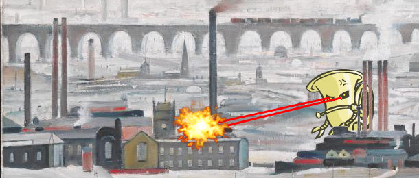
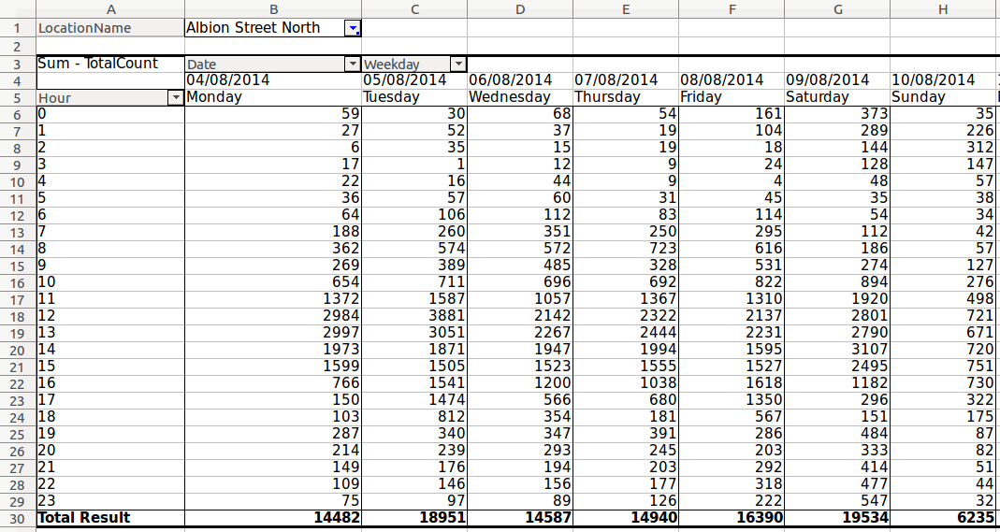
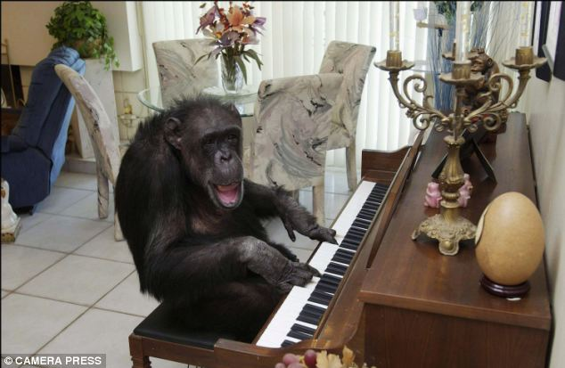
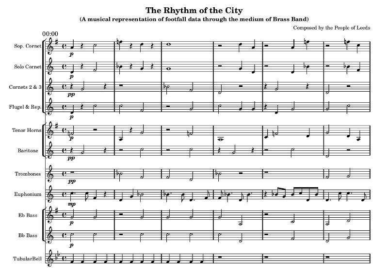
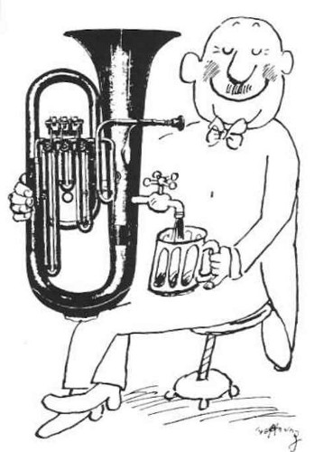

Trouble at
t'LeedsDataMill:

Oompah.pyBig Data meets Big Brass
Agenda
- Oompah.huh..? (Nicholas & Simon)
- Data analysis. (Simon)
- Musical mischief. (Nicholas)
- Questions. (You)
- Performance! (Enderby Brass Band)
Oompah.huh..?

"We tell stories..."
LDM Hack Day
Can we tell an engaging story about Leeds with data?
Crazy idea #1
Turn the footfall data into music.
Crazy idea #2
What musical genre epitomizes Leeds?
Our aim was to write Python scripts that turned raw footfall data into music for brass band called "Rhythm of the City".
And so, oompah.py was ironically checked
into Github.
Data Analysis Munging
Excel + Messy Data = Aargh!
Please use CSV
Tuesday
name | median | min histogram max|
-------------------------------------------------------------------------
00:00 : 33.0 ms [ 1.0 ▃▅▆▇▆▇▆▃▄▃▃▂___ _ __ _ _ _ 382.0]
01:00 : 30.0 ms [ 4.0 ▃▆▇▇▇▅▄▆▃▂▃________ __ _____ ___ 397.0]
02:00 : 28.0 ms [ 5.0 ▃▇▇▆▇▅▅▅▄▃▂▂▂____ __ _ ____ _ 321.0]
03:00 : 23.0 ms [ 5.0 ▃▇▇▅▆▅▃▆▃▂▂_______ _ ____ __ 264.0]
04:00 : 12.0 ms [ 2.0 ▅▇▇▅▄▃▂▂______ __ _ ___ __ 180.0]
05:00 : 17.0 ms [ 1.0 ▄▄▆▄▅▇▅▃▃▂___ ____ __ __ __ 186.0]
06:00 : 64.0 ms [ 6.0 ▂▃▃▄▄▂▃▂▄▂▃▂_▃▄▅▇▇▅▄▅▇▅▄▂▂_▂___▂ 163.0]
07:00 : 205.0 ms [ 5.0 ▂___ ___▂▃_▂_▂_▃▄▅▇▆▅▇▄▇▃▄▃___ _ 405.0]
08:00 : 470.0 ms [ 12.0 _ __ ___▂_▂▂▂▂▃▅▄▄▇▅▄▆▇▄▅▄▂▂____ 745.0]
09:00 : 554.0 ms [ 14.0 _____▂_▂▂▆▅▄▅▄▆▇▇▇▆▇▄▄▃▂_____ _ 1096.0]
10:00 : 931.0 ms [ 24.0 __ _▂▂▂_▂▃▄▄▄▅▅▇▇▄▄▃▄▂____ ___ _ 1970.0]
11:00 : 1357.0 ms [ 0.0 _ _ _____▂▂▄▃▅▅▇▇▆▄▃▃▃______ 2478.0]
12:00 : 1823.0 ms [ 56.0 ___ _▂__▂▃_▂▄▆▆▇▅▄▃________ _ 5652.0]
13:00 : 1823.0 ms [ 54.0 _________▃▂▂▂▂▃▂▆▇▆▇▅▄▄▃▂▂▂_____ 3014.0]
14:00 : 1534.0 ms [ 63.0 ___▂▃▂▂▄▃▅▃▃▅▅▇▇▅▅▅▃▃▂▃▂▂___▂___ 2664.0]
15:00 : 1472.0 ms [ 76.0 _ ________▂▃▂▃▄▄▇▇▅▆▄▄▃▅___▂____ 2544.0]
16:00 : 1416.0 ms [ 67.0 ___ _▂__▃▂_▂▂▂▄▄▃▄▄▆▇▇▇▅▇▅▅▂▂▃▂_ 2317.0]
17:00 : 1140.0 ms [ 42.0 _______▂▂▂▂_▂▃▄▃▃▃▆▄▆▇▄▆▃▃▂___ _ 2081.0]
18:00 : 584.0 ms [ 22.0 __▃▃▃▂▂▃▃▂▅▃▄▃▅▇▇▇▇▅▆▆▄▄▃▂▂▂_ _ 1486.0]
19:00 : 291.0 ms [ 12.0 ▃▃▂▃▅▂▃_▂▂▃▅▄▅▇▇▆▅▅▂▅▃▃▂▂▂▂▂____ 788.0]
20:00 : 176.0 ms [ 2.0 ▄▄▅▃▃▃▃▃▂▄▃▅▄▅▇▆▄▇▅▄▄▅▆▅▃▃▂▂▂___ 497.0]
21:00 : 113.0 ms [ 2.0 ▄▆▇▅▂▆▄▂▄▃▅▆▆▆▄▆▃▅▃▅▆▆▂▅▅▂▂▂_▂ _ 442.0]
22:00 : 79.0 ms [ 6.0 ▇▅▆▇▅▅▇▃▅▃▅▅▆▄▆▃▆▅▃▅▃▃▄▇▂▃▂▃▂__▂ 344.0]
23:00 : 52.0 ms [ 2.0 ▇▆▇▄▃▅▅▃▃▄▅▄▆▄▄▄▅▂▆▃▅▃▃_▃▂_▂ ▂▂_ 345.0]
Time Travel FTW
WEEK = {}
WEND = {}
for f in glob.glob('*.csv'):
voice = f.split('.')[0].lower().replace(' ', '_')
WEEK[voice] = defaultdict(list)
WEND[voice] = defaultdict(list)
with open(f) as fp:
for row in csv.DictReader(fp):
t = row['Hour']
d = row['WeekDay']
if d.lower() in ('saturday', 'sunday'):
data = WEND
else:
data = WEEK
data[voice][t].append(int(row['Count']))
Pitch
def pitch(data, scale):
"""Generate notes from the scale driven by the data."""
index = 0
for d in data:
index = (index + d) % len(scale)
yield scale[index]
Duration
def rhythm(data, mn, mx):
"""Produce note durations from provided patterns,
based on mean intensity
"""
i = threshold(data)
pattern = patterns[i]
# use the data to chose which pattern,
# so the process is deterministic
index = 0
for d in data:
index = (index + d) % len(pattern)
for duration in pattern[index]:
yield duration
yield None # indicates a bar has been produced
Voice of the Street
def voice(data, scale, mn, mx, length=8):
"""Generate a voice from the data, combining pitch and rhythm"""
bars = 0
note_iter = pitch(data, scale)
for duration in rhythm(data, mn, mx):
if duration is None:
bars += 1
yield '|'
if bars == length:
raise StopIteration()
elif duration[0] == 'r':
yield duration
else:
note = next(note_iter)
if '%s' in duration:
# more complex templated duration (e.g. tuplets)
yield duration % note
else:
yield "%s%s" % (note, duration)
Musical
Mischief
BLOOPS!
Charles E.Ives
Music affects because of the effects of sound.
Music engages us to listen.
Music, in some sense, tells a story in sound (there is a discernable narrative).
Can we reveal the story of the data through music?
Elements of Music
- Pitch: how high or low a note sounds.
- Rhythm: a sequence of different durations.
- Melody = Pitch + Rhythm.
- Timbre: the quality of a sound (e.g. the difference between a flute and violin).
- Dynamics: loudness.
- Key: the set of available pitches.
- Harmony: how pitches sound together as polyphony.
- Texture: how the harmony is "voiced".
- Etc, etc...
A Musical Mapping
The ingredients for generating "Rhythm of the City".
- Each instrument group in the band represents a specific area of the city. Ergo, cameras/locations are differentiated by timbre.
- The amount of footfall in a location changes the intensity of dynamics and rhythm (more footfall = louder / busier melodies).
- Use "nice" sounding pentatonic keys.
- Time of day is indicated by key.
- Each hour of the day is represented by an eight bar fragment.
- Tubular bells sound out the hours every eight bars.
The Result!
Does it work..?
IT'S TUBA TIME!
1am, 7am, 12 noon
Questions
Performance
Enderby Brass Band, 2014